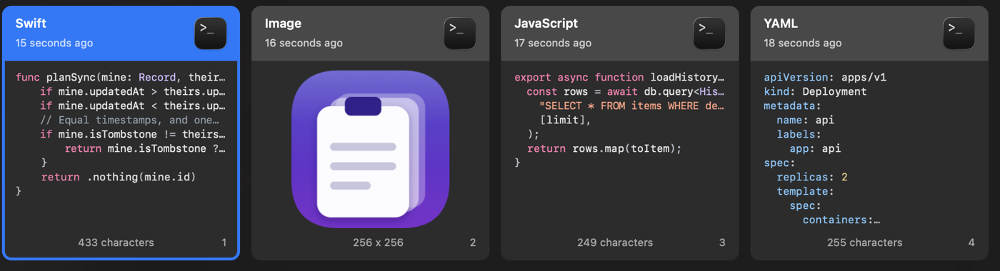
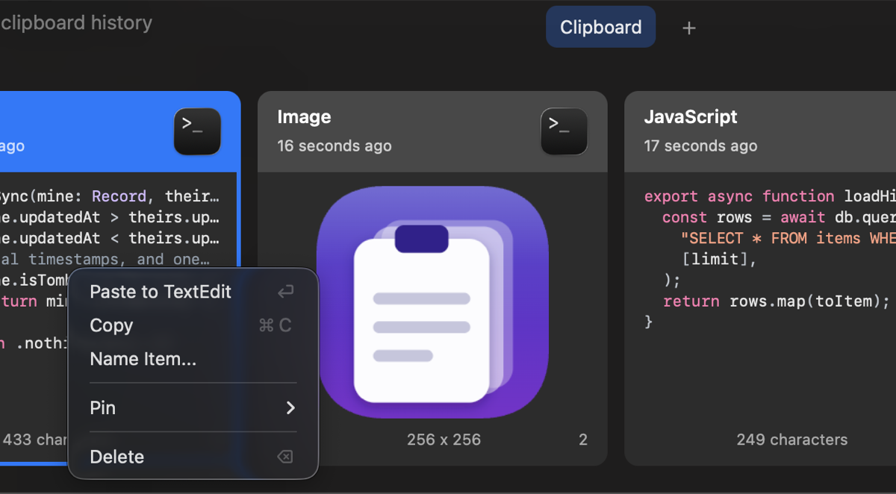
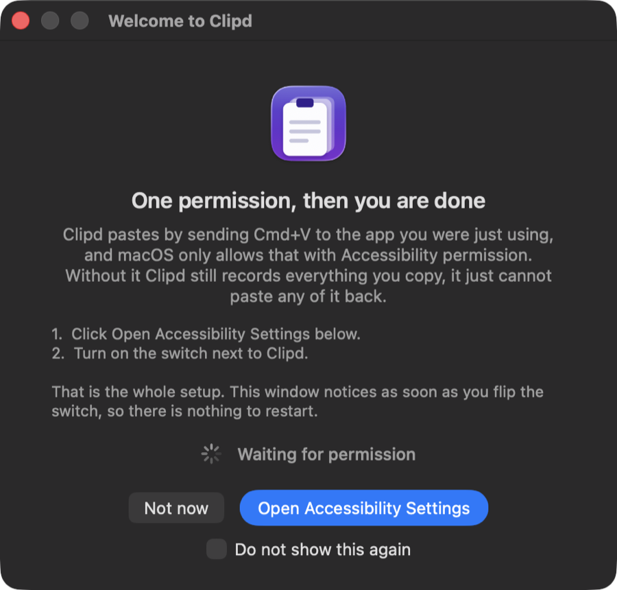

Free, with no catch
No subscription, no trial, no account, no telemetry, no analytics. There is no company behind Clipd and no server anyone is paying to keep running.
Clipboard history for macOS
Clipd keeps what you copy, searches all of it, and pastes what you pick back into the app you were using. Free, open source, and it syncs through a bucket that belongs to you.
func planSync(mine: Record, theirs: Record) -> SyncAction {
if mine.updatedAt > theirs.updatedAt { return .upload(mine.id) }
// Equal timestamps, and one side is a tombstone. Delete wins.
return .nothing(mine.id)
}Pick a card, or press 1 to 6. On your Mac it is ⌘⇧V, from anywhere.
Clipd reads everything you copy, which on a normal working day includes API tokens, private keys and passwords. That is a lot to hand to a closed program run by a company you have never met. So it is built the other way round: nothing to trust, because nothing is hidden and there is nowhere for your data to go that you do not already own.
No subscription, no trial, no account, no telemetry, no analytics. There is no company behind Clipd and no server anyone is paying to keep running.
MIT licensed and public. The repository records not only what was chosen but what was rejected and why, including the platform assumptions that turned out to be false when they were tested.
Sync goes through a Cloudflare R2 bucket in your own account. There is no Clipd server in the middle. Stop using the app tomorrow and your data has not moved anywhere.
Items are sealed with AES-GCM using a key derived from a passphrase you type on both Macs. Cloudflare stores ciphertext it cannot read. The local database is SQLCipher, keyed from the macOS Keychain.
Copy a function, a manifest or a query and the card shows it the way your editor would, with its indentation and its syntax colours intact.
The language is worked out from the text itself, so nothing has to be tagged by hand: Swift, TypeScript, JavaScript, Python, Go, Rust, Ruby, Bash, SQL, JSON, YAML and Markdown. Prose stays plain, because colouring an ordinary email is worse than missing a snippet.

Give any item a name, and search matches the name as well as the content. You can find something by a word that is not in it at all: call a block of YAML "staging deploy" and that is what you type three weeks later.
Pinboards group the things you keep coming back to. Retention decides what happens to everything else: a day, a week, a month, a year, or keep it forever.

The panel opens over whatever you were doing, including fullscreen apps. Type to filter, press Enter, and the item lands in the app you came from. No Dock icon, no window in your way.
They are numbered because they run in that order, and each catches something the one before it misses.
Clipd honours the ConcealedType flag that password
managers set on a copy they would rather nobody kept.
Copies from named apps are never recorded. It ships pre-filled with Passwords.app, Keychain Access, Bitwarden and 1Password, and any item offers "never save from this app".
If the clipboard is wiped shortly after something was copied, that item is deleted retroactively, payload and all. Wiping the clipboard a minute later is what password managers do.
The database is SQLCipher and the key lives in the macOS Keychain. Image payloads are encrypted on disk too, rather than sitting in the clear beside an encrypted database.
Apple's own Passwords.app sets no confidentiality marker at all. This was measured, not assumed: a real password copy arrives as a 20 byte plain text item, with nothing to tell it apart from any other short copy. Bitwarden does set the marker. Apple does not.
A clipboard manager relying on that marker alone, as the feature name "ignore confidential content" suggests, would write your Apple passwords straight into its database. That one measurement is why layer 1 ships pre-filled and why layer 2 exists at all.
You can check this yourself. It is in the repository, along with the raw pasteboard dump it came from.
Optional. Clipd works fully offline and sends nothing anywhere until you enter R2 credentials yourself. When you do, this is the whole of it.
Each item is encrypted with AES-GCM. The key comes from your passphrase through PBKDF2-SHA256 at 210,000 iterations, and never leaves the Mac.
The ciphertext lands in a Cloudflare R2 bucket in your own account. Cloudflare cannot read it, and neither can anyone without your passphrase.
The newest edit wins, and a deletion is recorded as a deletion rather than an absence, so removing something on one Mac does not bring it back from the other.
Open the DMG and drag Clipd into your Applications folder.
Clipd is signed with an Apple Development certificate, which a free Apple account cannot have notarised. Gatekeeper needs one command before it will open the app.
xattr -dr com.apple.quarantine /Applications/Clipd.app
Pasting works by sending ⌘ V to the app you were using, and macOS only allows that with permission. Clipd asks at first launch, opens the right pane of System Settings, and notices the moment you turn the switch on. There is nothing to quit and reopen.

⌘ ⇧ V from anywhere. To share a history with a second Mac, create an R2 bucket, make an API token scoped to that one bucket with object read and write, paste the four values into Settings, and set the same passphrase on both machines.
All of this is in the repository anyway. It is here because you should not have to go looking for it.
A free Apple Developer account cannot notarise anything. That is why step two of the install exists. If you would rather not trust a downloaded binary at all, build it from source, which is four commands.
Clipd is used every day by the person who wrote it, and it has 314 tests, but it has not been through many hands yet. Expect rough edges, and please report them.
A password copied out of Chrome's or Safari's built-in manager sets no marker, and the source app is the browser, which cannot be deny-listed without losing everything else you copy from it. Only the encrypted database and deleting the item cover that case.
Clipd uses Swift 6 with strict concurrency and several newer AppKit and CryptoKit APIs. Supporting older systems would mean carrying compatibility paths nobody is currently running.
The most honest thing an app like this can offer. You need Xcode 26 and a free Apple account.
git clone https://github.com/hengkysandy/clipd.git
cd clipd
brew install xcodegen
./app up
./app up builds it, installs it to Applications and launches
it. ./app test runs both test suites. Contributions are
welcome, and the
contributing guide
explains where code goes and why.